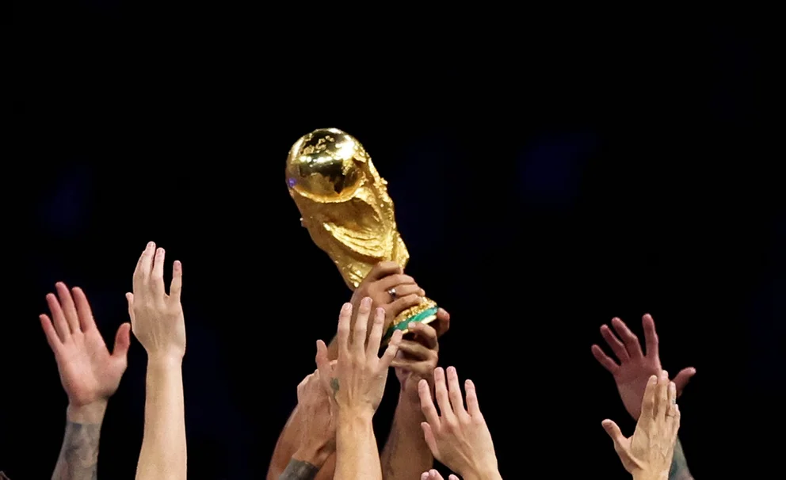

Oficial: FIFA aprobó el nuevo formato del Mundial 2026 con 48 selecciones
El organismo que regula el fútbol confirmó cómo se disputará la próxima edición del certamen que se disputará en México, Estados Unidos y Canadá. Todos los detalles
Es una jornada histórica para el fútbol porque en el Consejo de la FIFA que se celebró este martes en Kigali (Ruanda) se hizo oficial la aprobación del cambio de formato para la Copa del Mundo a partir de la edición de 2026, que será la primera que se disputará con la participación de 48 selecciones. A la expansión territorial por ser organizada en México, Canadá y Estados Unidos en simultáneo, se le suma también la ampliación de competidores, partidos y días.
Nuevos detalles en éste formato
Con la introducción de este nuevo formato, el Mundial tendrá 104 partidos (antes eran 64) llevados a cabo en un lapso de 39 días; lo que implica que el campeón y el subcampeón del certamen más prestigioso del planeta ahora jugarán ocho encuentros cada uno en lugar de los siete actuales, ya que se sumará la ronda de 16avos.
Esta modificación también obligará a los organizadores a sumar más fechas en las 16 sedes que han elegido para albergar la próxima Copa del Mundo. De esta forma, la primera fase estará compuesta ahora por 12 grupos de cuatro equipos en lugar de los ocho tradicionales que se habían instalado a partir de 1998. Clasificarán a la siguiente instancia los dos mejores de cada zona y los ocho mejores terceros.
“El formato revisado mitiga el riesgo de colusión y garantiza que todos los equipos jueguen un mínimo de tres partidos, al tiempo que proporciona un tiempo de descanso equilibrado entre equipos competidores”, anunció el organismo en su sitio web después de aprobarlo por unanimidad. “La final de la Copa Mundial de la FIFA 2026 se jugará el domingo 19 de julio de 2026, y el período de liberación obligatoria comenzará el 25 de mayo de 2026, luego del último partido oficial de clubes el 24 de mayo de 2026 (pueden existir excepciones)”, agrega además el comunicado.
Al sumar más partidos y días adicionales para la realización de la competencia, habrá que ver que postura toman los sindicatos de jugadores y clubes, que lógicamente ya han manifestado su preocupación en la última edición por la gran exigencia que se le impone a las principales estrellas del deporte más popular del mundo.
De cara al siguiente Mundial de 2026
La Copa Mundial de la FIFA que se jugará conjuntamente en México, Canadá y Estados Unidos le dará oportunidad a las naciones más pequeñas a ser parte de la gran fiesta que brinda esta competición, además que el organismo rector espera que haya un aumento en los ingresos millonarios que genera dicho evento.
Según ha pronosticado Gianni Infantino, presidente de la FIFA, en el ciclo de casi cuatro años hasta la Copa del Mundo 2026 se debería generar casi USD 4.000 millones más de lo que se produjo durante el mismo período hasta el Mundial de Qatar. No obstante, hay aficionados y especialistas que han manifestado su preocupación por el riesgo que existe a que baje la calidad dentro de este prestigioso torneo de selecciones.
Además, para 2026 habrá un aumento en la cantidad de cupos para cada confederación:
• UEFA saltará de 13 a 16 equipos.
• África tendrá 9, a diferencia de las 5 actuales.
• Asia pasará de las 4 plazas y media a 8.
• Conmebol aumentará de 4 plazas y media a 6.
• CONCACAF dejará atrás las 3 plazas y media para contar con 6.
• Oceanía obtendrá una plaza asegurada en lugar de la media plaza actual.